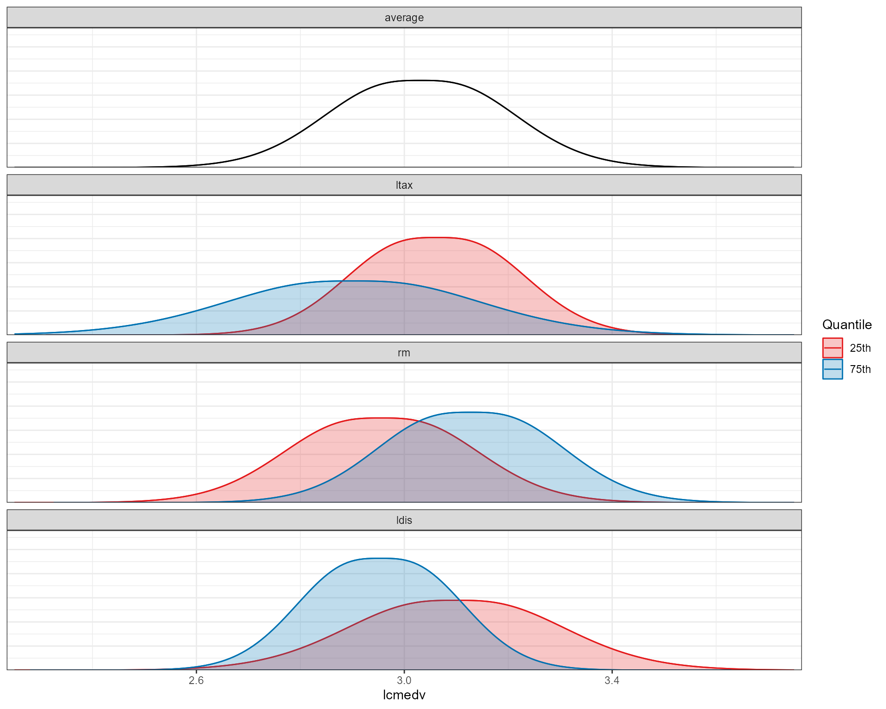

To begin, load the package.
Boston Housing Data
Perform automatic variable selection using a smooth information criterion.
fit <- smoothic(
formula = lcmedv ~ .,
data = bostonhouseprice2,
family = "sgnd", # Smooth Generalized Normal Distribution
model = "mpr" # model location and scale
)Display the estimates and standard errors.
summary(fit)
#> Call:
#> smoothic(formula = lcmedv ~ ., data = bostonhouseprice2, family = "sgnd",
#> model = "mpr")
#> Family:
#> [1] "sgnd"
#> Model:
#> [1] "mpr"
#>
#> Coefficients:
#>
#> Location:
#> Estimate SE Z Pvalue
#> intercept_0_beta 3.61174584 0.08181155 44.1471 < 2.2e-16 ***
#> crim_1_beta -0.02032255 0.00505227 -4.0225 7.082e-05 ***
#> zn_2_beta 0 0 0 0
#> indus_3_beta 0 0 0 0
#> rm_4_beta 0.23357173 0.01171721 19.9341 < 2.2e-16 ***
#> age_5_beta -0.00106083 0.00034141 -3.1072 0.0013172 **
#> rad_6_beta 0.00883974 0.00225510 3.9199 9.996e-05 ***
#> ptratio_7_beta -0.02583598 0.00261809 -9.8683 3.944e-16 ***
#> lnox_8_beta -0.28434660 0.08286384 -3.4315 0.0004889 ***
#> ldis_9_beta -0.16025230 0.02294754 -6.9834 5.105e-10 ***
#> ltax_10_beta -0.18420684 0.02140118 -8.6073 2.001e-13 ***
#> llstat_11_beta -0.17153333 0.01837441 -9.3354 4.535e-15 ***
#> chast_12_beta 0.05015814 0.01969757 2.5464 0.0064919 **
#>
#> Scale:
#> Estimate SE Z Pvalue
#> intercept_0_alpha -9.654035 2.288128 -4.2192 3.593e-05 ***
#> crim_1_alpha 0.019804 0.015717 1.2601 0.1328128
#> zn_2_alpha 0 0 0 0
#> indus_3_alpha -0.032281 0.022037 -1.4648 0.0875849 .
#> rm_4_alpha -0.177752 0.102209 -1.7391 0.0482274 *
#> age_5_alpha 0 0 0 0
#> rad_6_alpha 0.033590 0.017613 1.9072 0.0327278 *
#> ptratio_7_alpha 0 0 0 0
#> lnox_8_alpha -0.378692 0.818555 -0.4626 0.5116273
#> ldis_9_alpha -1.040374 0.269083 -3.8664 0.0001197 ***
#> ltax_10_alpha 1.354650 0.389785 3.4754 0.0004258 ***
#> llstat_11_alpha 0 0 0 0
#> chast_12_alpha 0 0 0 0
#>
#> Shape:
#> Estimate SE Z Pvalue
#> intercept_0_nu 0.30119 0.10397 2.897 0.002437 **
#>
#> ---
#> Signif. codes: 0 '***' 0.001 '**' 0.01 '*' 0.05 '.' 0.1 ' ' 1
#>
#> Kappa Estimate:
#> [1] 1.551471
#> Penalized Likelihood:
#> [1] 220.9246
#> IC Value:
#> [1] -441.8492
fit$kappa # shape estimate
#> [1] 1.551471Plot the standardized coefficient values with respect to the epsilon-telescope.
plot_paths(fit)
Plot the model-based conditional density curves.
plot_effects(fit,
what = c("ltax", "rm", "ldis"), # or "all" for all selected variables
density_range = c(2.25, 3.75))